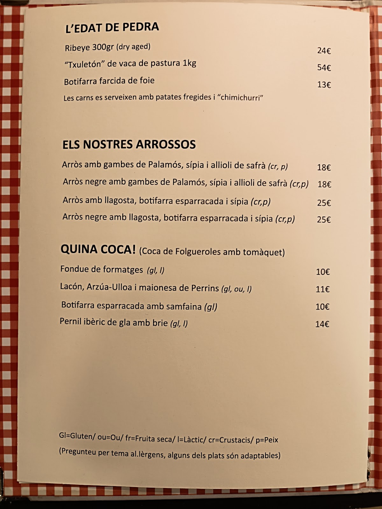

Un local bien llevado por dos hermanos, atentos y cercanos: cocina tradicional catalana con un toque especial. Salió en el programa Joc de Cartes de TV3 y no defraudó — mejor reservar.A place run by two brothers, warm and attentive: traditional Catalan cooking with a special touch. Featured on TV3's Joc de Cartes — and it lived up to it. Best to book.
Menú del día por 18€, arroces, fideuà, y platos ejecutados de principio a fin con mimo. Un bar de barrio como los de antes, pero con estilo.Set lunch at €18, rice dishes, fideuà, and plates cooked with care from start to finish. A neighbourhood spot like the old days, but with style.
